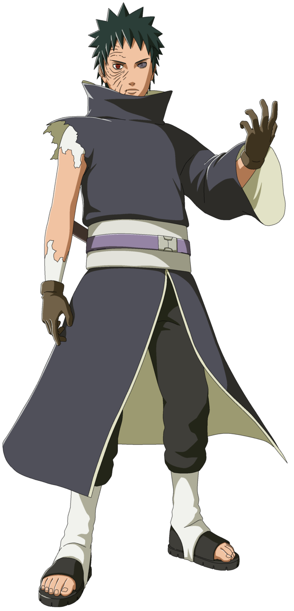
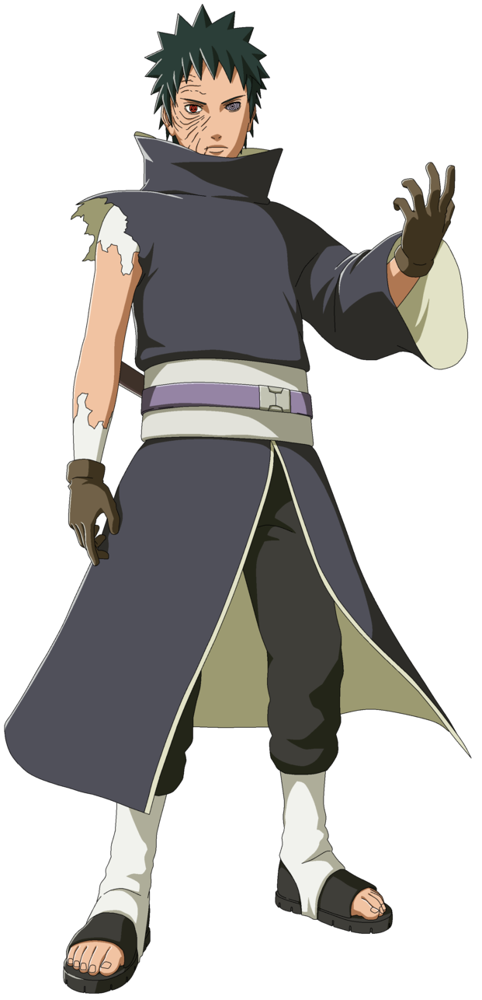

Tobi / Obito Uchiha
Nukenin da vila da Folha
 

foi um membro do clã Uchiha de Konohagakure. Acreditava-se que ele tinha morrido durante a Terceira Guerra Mundial Shinobi, com seu único legado sobrevivente sendo o Sharingan que ele deu ao seu companheiro de equipe, Kakashi Hatake. Na verdade, Obito foi salvo da morte e treinado por Madara Uchiha, mas os acontecimentos da guerra deixaram Obito desiludido com o mundo, e ele tentou substituí-lo por um novo. Madara Uchiha fez Obito Uchiha ser seu sucessor, lhe dando o Plano Olho da Lua. Usando o pseudônimo de Tobi e Madara Uchiha, Obito manipulou a Akatsuki das sombras para dar continuidade aos seus planos, eventualmente, indo a público com eles e, no processo, iniciando a Quarta Guerra Mundial Shinobi sendo manipulado pelo Zetsu Negro. Durante a guerra, Obito teve uma mudança no coração, porém, ele acabou sacrificando sua vida para ajudar a salvar o mundo.
Depois de sua máscara anterior ser destruída por Konan e implantar o Rinnegan esquerdo de Madara, Obito começou a usar uma nova máscara, que era branca com uma tonalidade roxa que cobria toda a metade superior da cabeça. Ele também vestia uma roupa semelhante a roupa tradicional do clã Uchiha durante o Período dos Reinos Combatentes. Este traje incluía um par de calças e luvas pretas, com uma presumivelmente camisa branca.
O Mangekyō Sharingan de Obito lhe permite executar o Kamui, um ninjutsu de espaço-tempo com maior versatilidade do que o de Minato. O Kamui serve como uma porta de entrada para um outro espaço dimensional, que ele pode teleportar todo ou partes do seu corpo entre ambos à vontade.